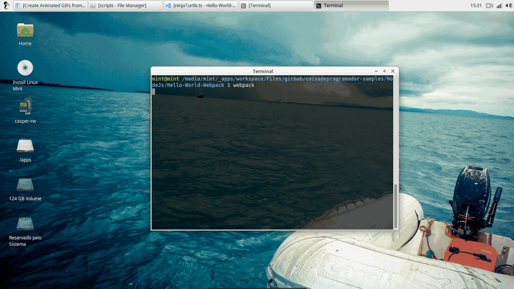
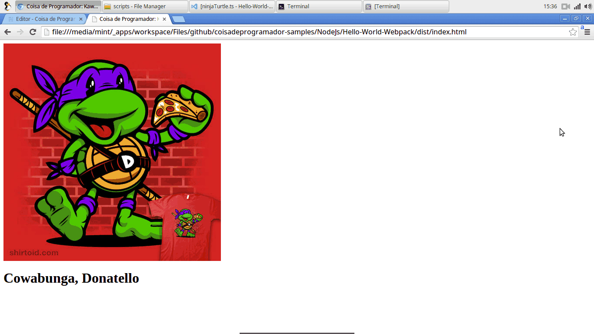

O que é ?
O webpack é um module bundler semelhante ao browserify que disponibiliza conteúdos estáticos por módulos e dependências, abraçando o conceito de code-splitting. Simplesmente agrupar a codificação em um único arquivo é uma prática ineficiente para grandes aplicações, especialmente quando você tem uma codificação que será utilizada em ponto específico, este problema pode ser resolvido com o module bundler.
Module Bundler
A "modularização" está presente no mundo JavaScript há algum tempo. O RequireJS possibilita o carregamento de módulo e arquivos no client-side e também é compatível com NodeJs. O próprio NodeJs provê módulos no server-side. Já o Browserify garante que seus módulos NodeJs também rodem no navegador(client-side).
O webpack possui uma flexibilidade no carregamento de código que pode ser no padrão CommonJs, AMD ou ES6.
A grande sacada do webpack é foco no front-end você poderá criar bundles e suas dependências para JavaScript e Css.
Pré-requisitos
Se você não está familiarizado com o mundo NodeJs veja:
Vamos instalar?
Primeiramente instale o webpack como módulo global e depois instale como uma dependência de desenvolvimento.
Digite comando abaixo em sua linha de comando favorita:
sudo npm install webpack -g
npm install webpack --save-dev
Loaders
Que tal desenvolver aplicações usando todo o poder do EcmaScript 6 - ES6 ou TypeScript, criar folhas de estilo com Sass ou Less, codificar seu HTML com Jade ou Mustache. Este são os tipos de problema que o webpack resolve com diversos loaders, onde você poderá definir quais serão os padrões do seu projeto.
TypeScript na cabeça
O TypeScript possibilita uma escrita de JavaScript fortemente "tipada", compilando e mantendo a compatibilidade para qualquer navegador ou host compatível com o ES3, isso mesmo NodeJs e aquele seu navegador favorito Internet Explorer 8, rs.
Primeiramente instale o Typescript.
Será instalado a versão 1.6.2 por questões de compatibilidade com o loader TypeScript do webpack
sudo npm install typescript@1.6.2 -g
Existem algumas configurações necessárias para o intellisense do TypeScript.
O arquivo tsconfig.json configura o intellisense para o Editor de Códigos, no meu caso utilizo o Visual Studio Code, crie o arquivo abaixo na pasta raiz do projeto.
- tsconfig.json
Clique aqui para maiores informações relacionadas as configurações deste arquivo.
{
"compilerOptions": {
"target": "es5",
"noImplicitAny": false,
"removeComments": true,
"sourceMap": true,
"module": "commonjs",
"experimentalDecorators": true
},
"exclude": [
"node_modules",
"dist",
"dev",
"reports"
]
}
Além do intellisense, vamos configurar o tsd que torna qualquer framework JavaScript fortemente "tipado", Yes, TypeScript Rocks!
Será necessário instalar o tsd.
sudo npm install tsd -g
Pronto para inicializar, digite o comando abaixo na pasta do projeto, será criado o arquivo de configuração tsd.json e o arquivo de importação do "tsd" o typings/tsd.d.ts.
tsd init
Para este artigo iremos utilizar o jQuery, será necessário instalar o tsd do jQuery, que possibilitará o intellisense no editor e uma validação semântica.
tsd install jquery
A próxima etapa será instalar as dependências do projetos.
npm install webpack --save-dev
npm install ts-loader --save-dev
npm install jquery --save
Iniciando
Crie um arquivo chamado webpack.config.js e adicione o conteúdo abaixo.
var webpack = require('webpack'),
path = require('path');
module.exports = {
//Modo debug para facilitar nosso trabalho
debug: true,
//Define o arquivo de entrada da aplicação (main())
entry: {
main: './src/app.ts'
},
//Cria arquivos source-map para debug
devtool: 'source-map',
//Indica os arquivos que serão resolvidos como módulo
resolve: {
extensions: ['', '.webpack.js', '.web.js', '.ts', '.js']
},
//Arquivo de saída (bundle.js) na pasta dist
output: {
path: path.join(__dirname, 'dist'),
filename: 'bundle.js'
},
module: {
//Define os loaders que serão utilizados, neste caso o ts-load (TypeScript)
loaders: [
{ test: /\.ts?$/, loader: 'ts-loader' }
]
}
};
Codificando
Vamos criar o arquivo ninjaTurtle.ts que será o módulo consumido pela aplicação.
- ninjaTurtle.ts
import $ = require('jquery');
export interface INinjaTurtle {
name: string;
greeter(): void;
}
export class NinjaTurtle implements INinjaTurtle {
public name: string;
constructor(name: string) {
this.name = name;
}
greeter() {
return "Cowabunga, ".concat(this.name);
}
getImage() {
return './images/'.concat(this.name.toLowerCase(), '.jpg');
}
}
export class NinjasTurtles {
private static turtles = ['Michelangelo', 'Donatello', 'Raphael', 'Leonardo'];
private static index: number = 0;
static start() {
if (this.index > this.turtles.length - 1) {
this.index = 0;
}
let ninjaTurtle = new NinjaTurtle(this.turtles[this.index]);
$('#message').html(ninjaTurtle.greeter());
$('#picture').attr("src", ninjaTurtle.getImage());
this.index++;
}
}
Agora crie o arquivo de entrada chamado app.ts.
- app.ts
import {NinjaTurtle, INinjaTurtle, NinjasTurtles} from "./ninjaTurtle";
import $ = require('jquery');
$(() => {
NinjasTurtles.start();
setInterval(() => NinjasTurtles.start(), 5000);
});
O projeto utiliza algumas imagens, baixe o conteúdo no github.
Compilando
Existem alguns modos de compilação debug , produção e watcher.
- Debug
webpack
- Produção
webpack -p
- Rodando com o "watcher"
O webpack possibilita que a cada modificação de código ocorra uma recompilação, porém esta funcionalidade fica mais interessante utilizando o browsersync, que recarrega o navegador também, este é um recurso muito conhecido por desenvolvedores do Meteor.
webpack --watch
Este será o resultado da compilação.

Abra a página index.html gerada na pasta dist e veja a aplicação.

Conclusão
Esta breve introdução ao webpack mostrou o poder deste maravilhoso module bundler com automatizador de tarefas, que tem seu espaço reservado para compilação client-side. O webpack não subsistiu o Gulp ou Grunt, você pode até mesmo combiná-los com outros módulos que explicarei futuramente.
Até a próxima!